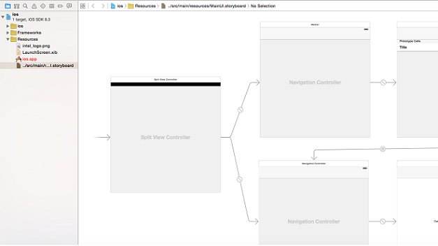

Working with Persistent Storage Using the Multi-OS Engine Technology Preview - Part 1¶
This is a two-part tutorial shows how to do persistent storage in Apple iOS* with Java* using Intel’s Multi-OS Engine Technology Preview.
This first part explains how to create and write to a file in an iOS directory and an Android* directory for persistent storage. We create a simple Note Taking app to create notes and arrange them in a table view, where the most recent notes appear at the top of the table. The second part builds upon this first part by adding SQLite* functionality.
For this tutorial, we assume that you have gone through our getting started guides for building iOS and Android apps using Multi OS Engine. If not, please read Getting Started pages first.
The complete sample project can be found at this GitHub link for your reference.
Like other Multi OS Engine apps, this app consists of mostly Common Code and Platform-Specific Code.
Common Code¶
First let’s create a common lib folder to hold the Java classes that will be common to both Android and iOS. Create a class that will perform basic file IO operations like creating and opening a file.
package com.example;
import java.io.EOFException;
import java.io.File;
import java.io.FileInputStream;
import java.io.FileOutputStream;
import java.io.IOException;
import java.io.InputStream;
import java.io.ObjectInputStream;
import java.io.ObjectOutputStream;
import java.io.OutputStream;
import java.net.URI;
import java.net.URISyntaxException;
import java.net.URL;
import java.util.ArrayList;
import java.util.Collections;
import java.util.HashMap;
public class Data {
private HashMap<String,String> allNotes;
private String key;
private String baseDir;
String fileName = "note_taking.txt";
String filePath;
public Data(String dir){
baseDir = dir;
filePath = baseDir + File.separator + fileName;
}
public HashMap<String, String> getAllNotes(){
File f = new File(filePath);
try {
if(!f.exists()) {
f.createNewFile();
}
if(allNotes==null) {
try{
InputStream fis = new FileInputStream(f);
ObjectInputStream ois = new ObjectInputStream(fis);
allNotes = (HashMap<String, String>) ois.readObject();
fis.close();
ois.close();
}catch (EOFException e){
allNotes = new HashMap<String, String>();
}
}
}
} catch (IOException ioe) {
ioe.printStackTrace();
} catch (ClassNotFoundException c) {
System.out.println("Class not found");
c.printStackTrace();
}
return allNotes;
}
public void setCurrentKey(String key){
this.key = key;
}
public String getCurrentKey(){
return key;
}
public void setNoteForCurrentKey(String note){
allNotes.put(key,note);
}
public String getNoteForCurrentKey(){return allNotes.get(key);}
public void setNoteForKey(String k,String note){
allNotes.put(k,note);
}
public String getNoteForKey(String k){return allNotes.get(k);}
public void removeNoteForKey(String k){
allNotes.remove(k);
}
public void saveFile() {
try {
File f = new File(filePath );
if(!f.exists()) {
f.createNewFile();
}try {
FileOutputStream fos = new FileOutputStream(f);
ObjectOutputStream oos = new ObjectOutputStream(fos);
oos.writeObject(allNotes);
fos.close();
oos.close();
}catch (Exception e){
e.printStackTrace();
}
} catch (IOException e) {
e.printStackTrace();
}
}
public ArrayList<String> getAllKeys(){
ArrayList<String> keys = new ArrayList<String>();
keys.addAll(getAllNotes().keySet());
Collections.sort(keys,Collections.reverseOrder());
return keys;
}
}
Note that we pass the path of the directory - the only platform-specific part - to the constructor.
Platform-Specific Code¶
Building the iOS project:
For this application, use the Master - Detail application with storyboard as the base template.
This template has necessary methods and code set up to help you get started.
If you open the project in Apple Xcode, you will see the corresponding MasterViewController.h and .m and DetailViewController.h and .m files. Also the storyboard will consist of the standard view objects.
Add a text view object from the object library to the DetailView and make its referencing outlet in the corresponding DetailViewController.h file
After that, come to Android Studio* side of the project and look for the DetailViewController.h file under Xcode folder of the iOS module.
Generate bindings by clicking on the Generate Bindings menu item. This will generate reference to the Text view object that we added in the DetailView.
Also add our common module as a dependency to the iOS and Android modules.
Building the Android Project:
For Android, we can start with a simple Blank Activity application and build our UI and add our Activity and Adapter files. The purpose of this tutorial is to show how to build the app in iOS (so we skip the part of building Android project here).
File Directory Handling - iOS
Now let’s code a bit in our MasterViewController.java file. Here the main thing to understand is how we get the directory path of the filestorage directory of iOS. In iOS, files are stored in Documents directory and its path can be retrieved by this piece of code:
public String <em><strong>applicationDocumentsDirectory()</strong></em> {
NSArray urls = NSFileManager.defaultManager().URLsForDirectoryInDomains(NSSearchPathDirectory.DocumentDirectory, NSSearchPathDomainMask.UserDomainMask);
NSURL url = (NSURL)urls.lastObject();
String path = url.fileSystemRepresentation();
return path;
}
This path is passed in the constructor of the Data class we created before.
@Override
@Selector("viewDidLoad")
public void viewDidLoad() {
// Do any additional setup after loading the view, typically from a nib.
navigationItem().setLeftBarButtonItem(editButtonItem());
<em><strong> data = new Data(this.applicationDocumentsDirectory());</strong></em>
}
File Directory Handling - Android
In Android side, get the string of the base directory and pass it to the Data class in our onCreate method.
<em><strong>String baseDir = android.os.Environment.getExternalStorageDirectory().getAbsolutePath();</strong></em>
@Override
protected void onCreate(Bundle savedInstanceState) {
super.onCreate(savedInstanceState);
setContentView(R.layout.activity_main);
<em><strong>data = new Data(baseDir);</strong></em>
objects = new ArrayList<String>();
makeObjects();
ListView list = (ListView) findViewById(android.R.id.list);
listAdapter = new ListAdapter(this,objects,data);
list.setAdapter(listAdapter);
list.setOnItemClickListener(new AdapterView.OnItemClickListener() {
@Override
public void onItemClick(AdapterView<?> parent, View view, int position, long id) {
data.setCurrentKey(objects.get(position));
Intent intent = new Intent(MainActivity.this, EditorActivity.class);
// Uri uri = Uri.parse(NotesProvider.CONTENT_URI + "/" + id);
intent.putExtra(DEFAULT_TEXT, data.getAllNotes().get(data.getCurrentKey()));
startActivityForResult(intent, EDITOR_REQUEST_CODE);
}
});
}
Filling the Table with Notes - iOS
To fill the tableView, an ArrayList object variable has already been defined by the template. We get all the notes from our file using our Data class and fill the arraylist. In iOS a table is filled by using the following method
@Override
public UITableViewCell tableViewCellForRowAtIndexPath(UITableView uiTableView, NSIndexPath nsIndexPath) {
UITableViewCell cell = (UITableViewCell) tableView().dequeueReusableCellWithIdentifierForIndexPath("Cell", nsIndexPath);
String objkey = objects.get((int) nsIndexPath.row());
cell.textLabel().setText(data.getAllNotes().get(objkey));
return cell;
}
Filling the Table with Notes - Android
To fill the table on Android, we get the list from the Data class and pass it to our ListAdapter which ultimately does the work of filling the table.
objects = new ArrayList<String>();
makeObjects();
ListView list = (ListView) findViewById(android.R.id.list);
listAdapter = new ListAdapter(this,objects,data);
list.setAdapter(listAdapter);
Transitioning to Second View - iOS
In iOS, segues are used to transition from one view to other. The segue part is already setup by the template we just have to make changes in its method as shown below.
@Override
public void prepareForSegueSender(UIStoryboardSegue uiStoryboardSegue, @Mapped(ObjCObjectMapper.class) Object o) {
super.prepareForSegueSender(uiStoryboardSegue, o);
String object;
if (uiStoryboardSegue.identifier().equals("showDetail")) {
NSIndexPath indexPath = tableView().indexPathForSelectedRow();
if(indexPath==null){
object = objects.get(0);
}
else {
object = objects.get((int) indexPath.row());
}
DetailViewController controller = (DetailViewController) ((UINavigationController) uiStoryboardSegue.destinationViewController()).topViewController();
controller.setDetailItem(object,data);
controller.navigationItem().setLeftBarButtonItem(splitViewController().displayModeButtonItem());
controller.navigationItem().setLeftItemsSupplementBackButton(true);
}
}
Transitioning to Second View - Android
In Android, we set click listener for our ListView that initializes the second Activity on click of a list item
list.setOnItemClickListener(new AdapterView.OnItemClickListener() {
@Override
public void onItemClick(AdapterView<?> parent, View view, int position, long id) {
data.setCurrentKey(objects.get(position));
Intent intent = new Intent(MainActivity.this, EditorActivity.class);
intent.putExtra(DEFAULT_TEXT, data.getAllNotes().get(data.getCurrentKey()));
startActivityForResult(intent, EDITOR_REQUEST_CODE);
}
});
Using this method, data can be retrieved from the file storage and displayed, while keeping business logic common for both the platforms.
Final Screen Shots¶
Here are the final screenshots for our app:
iOS:
Android:
To add SQLite functionality to our app, see the second part.